Exercicis
Fes-los en un fitxer .py. Recomanat: un fitxer per exercici (ex: ex1.py, ex2.py...).
- Exercici 1 — print i input
- Exercici 2 — Tipus de variables
- Exercici 3 — Operacions
- Exercici 4 — Condicions
- Exercici 5 — while i break
- Exercici 6 — for i range
- Exercici 7 — for recorrent text
- Exercici 8 — random (dau o moneda)
- Exercici 9 — Llistes
- Exercici 10 — Funcions
- Exercici 11 — Texts intel·ligents
- Exercici 12 — Debug i errors
- Exercici 13 — Menú complet
Exercici 1 — print i input
Objectiu: demanar informació i mostrar-la per pantalla.
Enunciat: Demana a l’usuari el seu nom i la seva edat, i mostra un missatge com:
Pista
Fes servir input() per demanar i print() per mostrar.
Solució
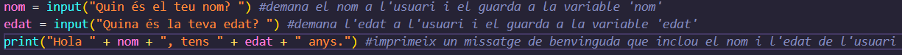
Exercici 2 — Tipus de variables
Objectiu: entendre str, int, float, bool, type() i conversions.
Enunciat: Crea aquestes variables i mostra el seu tipus amb type():
a = "100"b = 100c = 3.5d = True
Després, converteix a a int i suma a + b (ha de donar 200).
Finalment, converteix b a str i mostra: 100 euros.
Pista
Conversions: int(), float(), str().
Solució
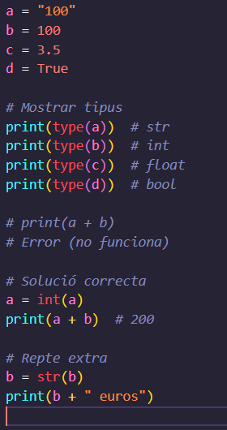
Exercici 3 — Operacions
Objectiu: practicar operadors +, -, *, /, //, %, **.
Enunciat: Demana dos números a l’usuari i mostra:
- La suma
- La resta
- La multiplicació
- La divisió
- La divisió entera
- El residu
- El primer elevat al segon
Pista
Recorda: input() sempre dóna str, has de fer int() o float().
Solució
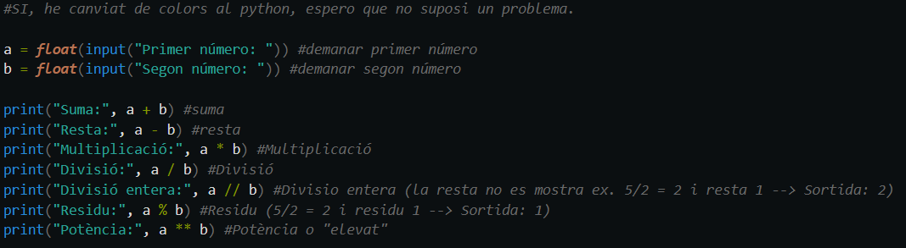
Exercici 4 — Condicions
Objectiu: practicar if, elif, else i comparadors.
Enunciat: Demana una edat i mostra:
- Si és menor de 18 → “Ets menor d’edat”
- Si és 18 o més → “Ets major d’edat”
Pista
Converteix l’edat a int abans de comparar.
Solució
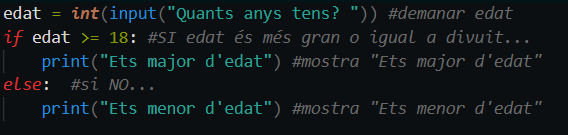
Exercici 5 — while i break
Objectiu: practicar bucles while i sortir amb break.
Enunciat: Fes un programa que pregunti “Vols continuar? (sí/no)” fins que l’usuari respongui “no”.
Pista
Usa while True + break. I recorda .lower() i .strip().
Solució
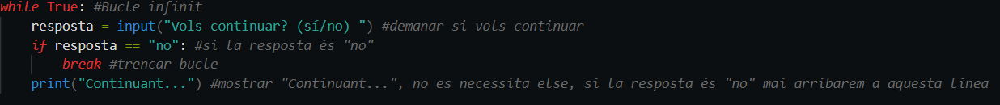
Exercici 6 — for i range
Objectiu: comptar amb range().
Enunciat: Mostra els números del 1 al 20 i al final mostra quants números has mostrat.
Pista
range(1, 21) perquè el final no s’inclou.
Solució
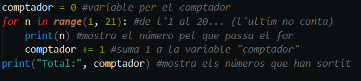
Exercici 7 — for recorrent text
Nota: Aquest exercici és extra, trobaràs funcións del tema següent (llistes), com len().
Objectiu: recórrer una paraula lletra a lletra.
Enunciat: Demana una paraula i mostra cada lletra en una línia. Després mostra quantes lletres té.
Pista
Per comptar lletres: len(paraula).
Solució
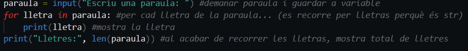
Exercici 8 — random (dau o moneda)
Objectiu: practicar random.randint().
Enunciat: Fes un programa que simuli una moneda (Cara o Creu).
Pista
randint(0, 1) i després un if.
Solució
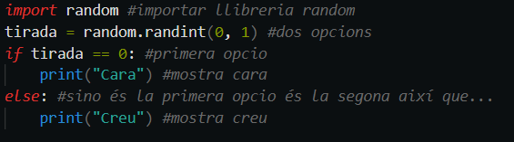
Exercici 9 — Llistes
Objectiu: practicar llistes, append(), remove(), len().
Enunciat: Crea una llista inventari amb 2 objectes. Afegeix-ne un tercer. Elimina un. Mostra l’inventari i quants objectes queden.
Pista
Exemple: inventari.append("...") i inventari.remove("...").
Solució
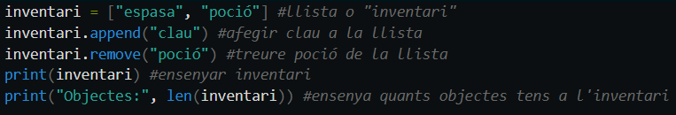
Exercici 10 — Funcions
Objectiu: crear funcions amb paràmetres i return.
Enunciat: Crea una funció suma(a, b) que retorni la suma. Després demana dos números i mostra el resultat.
Pista
def suma(a, b): return a + b
Solució
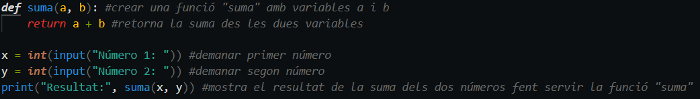
Exercici 11 — Texts intel·ligents
Objectiu: practicar .lower(), .strip(), in.
Enunciat: Demana una frase i comprova si conté la paraula “python” (sense importar majúscules/minúscules ni espais).
Pista
Fes frase = frase.lower() i després mira si "python" in frase.
Solució
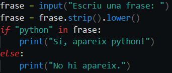
Exercici 12 — Debug i errors
Objectiu: llegir errors i arreglar un codi.
Enunciat: Aquest codi peta. Copia’l, executa’l i arregla’l:
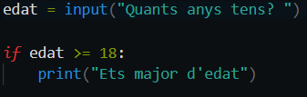
Pista
input() retorna text. Converteix a int.
Solució
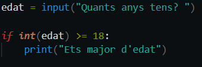
Exercici 13 — Menú complet
Objectiu: crear un programa amb menú i opcions.
Enunciat: Fes un programa que mostri un menú amb 3 opcions i es repeteixi fins que l’usuari triï “Sortir”.
Pista
Fes servir while True, if/elif/else i break per sortir.
Solució
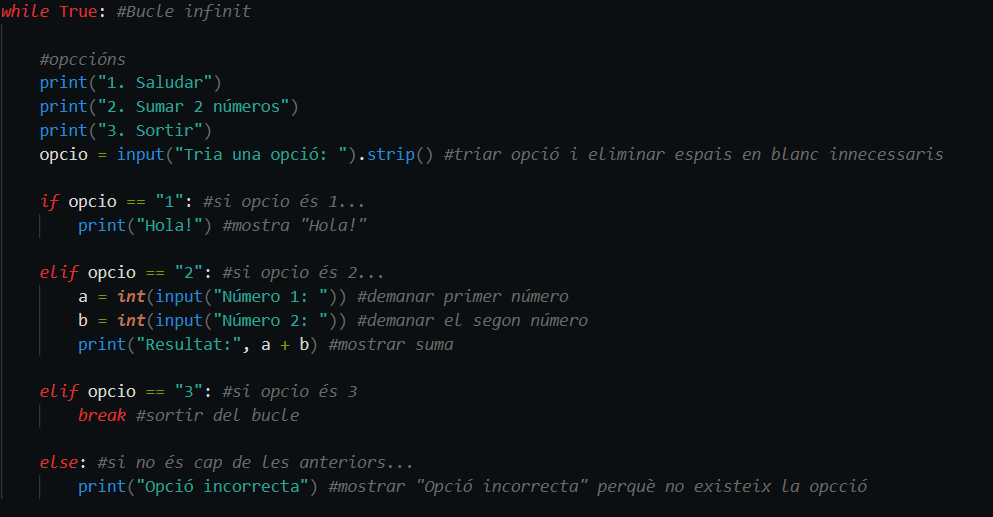